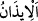

“Rabb’in, elbette kıyâmet gününe kadar onlara azabın en kötüsünü” zelil kılmak,
cizye vermeye mecbur edilmek gibi türlü türlü azab şekillerini “yapacak kimseler
göndereceğini ilan etti.”
“__WORD__”, bildirmek ve azmetmek mânâsına gelir. Çünkü bir işi yapmaya azmeden ve
buna karar veren kişi, onu konuşur, fiil ve davranışları ile de belli eder. Allah Teâlâ’nın
bir işe azmetmesi ise o işin, O’nun ilminde sâbit olması ve belirlenen vakitte iradesinin
o işin vukuuna taalluk etmesinden ibarettir. Buna göre mânâ şöyledir: “Ey Muhammed,
Allah Teâlâ’nın elbette kıyamet gününe kadar onlara azabın en kötüsünü yapacak
kimseler göndermeyi kendi zâtına vacip kıldığını yahudilere hatırlat.”
Allah Teâlâ, Süleyman (a.s.)’dan sonra onların üzerine Buhtunnasr’ı göndermiştir. O
da yurtlarını harabeye çevirmiş, savaşçılarını öldürmüş, kadınlarını ve çocuklarını esir
etmiş, kalanları da cizyeye tâbî tutmuştur. Yahudiler cizyeyi mecûsilere veriyordu.
Nihayet Allah Teâlâ Muhammed (s.a.v.)’i gönderdi. O da onlara yapacağını yaptı, sonra
da onları cizyeye bağladı. Kıyamete kadar da cizye vermeye mecbur kalacaklardır.
Haddâdî der ki: “Bu ayette, yahudilerin kıyamete kadar asla izzet ve şeref sahibi
olamayacaklarına delâlet vardır.”
“Şüphesiz Rabb’in çabuk ceza verendir ” onları dünyada iken cezalandırır. “ve O,”
onlardan tevbe edip imânâ gelenler için de “çok bağışlayan, çok esirgeyendir.”
Ayette işaret vardır ki: Kıyamet gününe kadar kendisine süre verilmiş olan şeytan,
halkı Allah’a yakınlıktan uzaklaştırmak, sapıklığa teşvik etmek, kulluktan geri bırakmak
ve doğru yoldan saptırmak gibi azabın en kötüsünü yapmak üzere gönderilir.
“Şüphesiz Rabb’in, çabuk ceza verendir.” Onları dünyada cezalandırır ve günahları
daha da artsın diye onlara mühlet verir. İşte bu, dünyadaki cezadır. Bu, aynı zamanda
ahiretteki cezayı da gerekli kılar. “ve O, çok bağışlayandır”, tevbe edip kendine
dönenleri bağışlar. Yani ruhlar ve kalpler, nefse ve onun arzusuna uymaktan vazgeçip
Allah’a dönerler ve mağfiret talebinde bulunurlarsa muhakkak Allah onları affeder.
Çünkü O, “çok esirgeyendir.” Rahîm’dir, çok merhametlidir, tevbe edip kendisine
yönelenlere merhamet eder.
Burada bir mânâ daha vardır: “çabuk ceza verendir” yani, mü’minleri dünyada
korku, açlık, mallardan, canlardan ve ürünlerden eksiltme gibi çeşitli belalarla
cezalandırır. Günahlarına keffaret olması için onları, bu bela ve musibetlere sabretmeye
muvaffak kılar. Böylece onlar dünyadan, günahlardan temizlenmiş olarak çıkarlar.
Ahirette de asla azab görmezler. “ve O,” ahirette onlar için “çok bağışlayan, çok
esirgeyendir.”
Yahyâ (a.s.), İsâ (a.s.) ile karşılaştı ve İsâ (a.s.), Yahyâ (a.s.)’ın yüzüne gülümsedi.
Yahya (a.s.) “Bana ne oluyor ki emniyetteymişsin gibi seni gayet rahat görüyorum.”
dedi. İsâ (a.s.): “Peki bana ne oluyor ki seni, sanki Allah’tan ümidini kesmiş gibi asık
suratlı görüyorum.” diye karşılık verdi. Sonra Allah bize vahyini indirinceye kadar bu